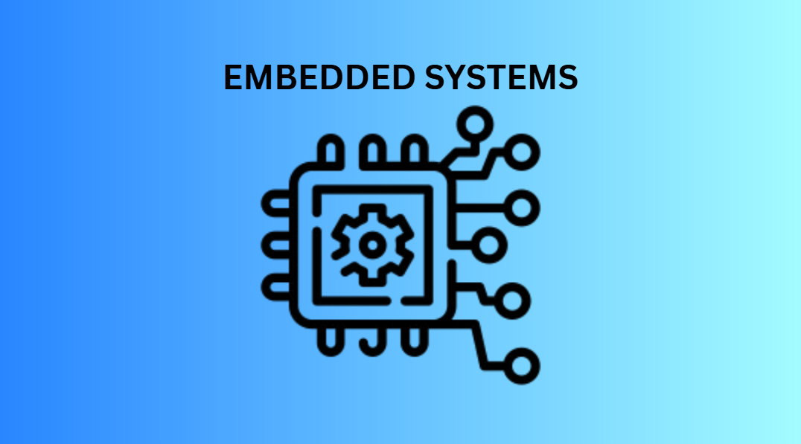
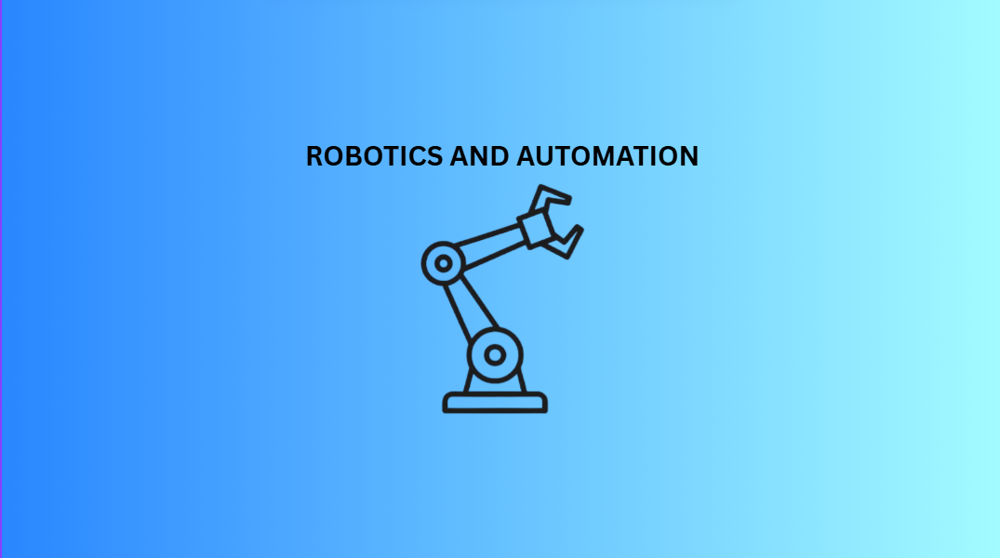
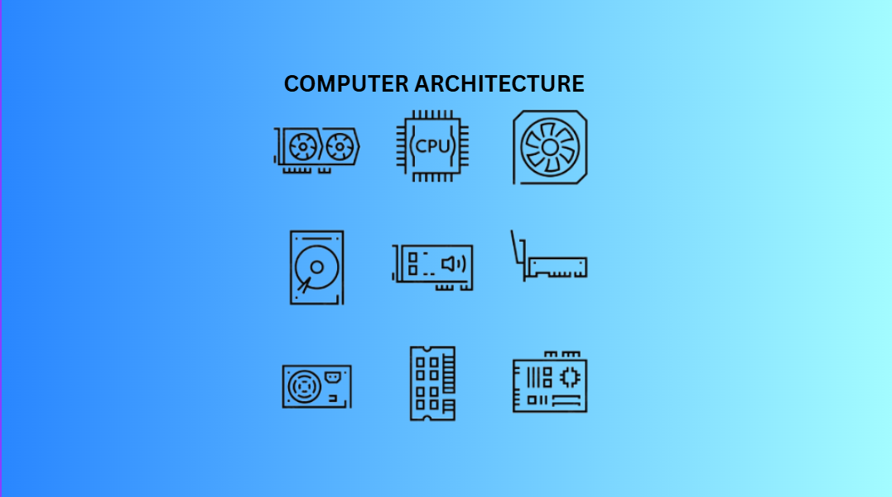
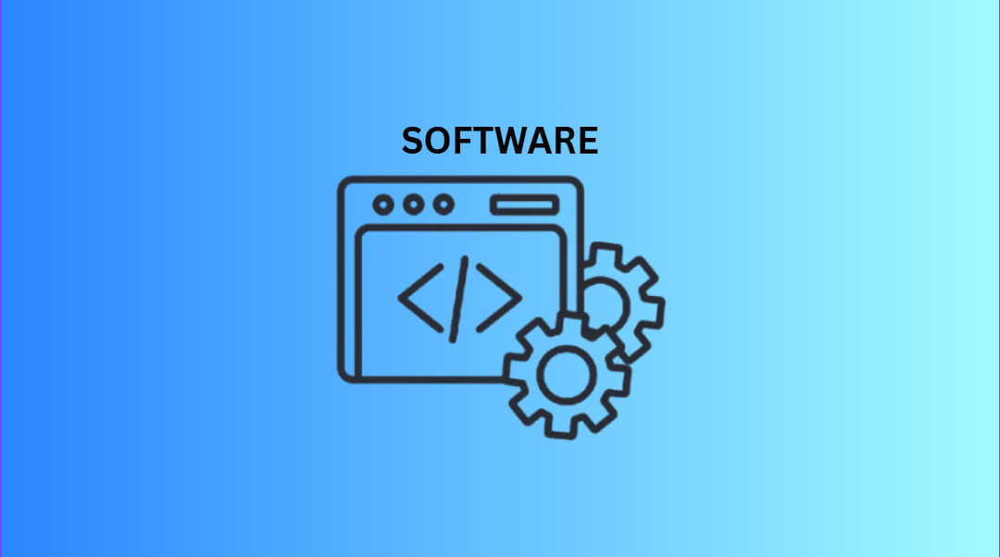
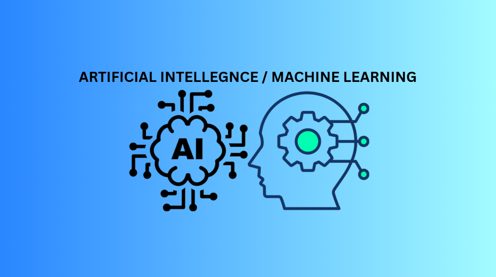
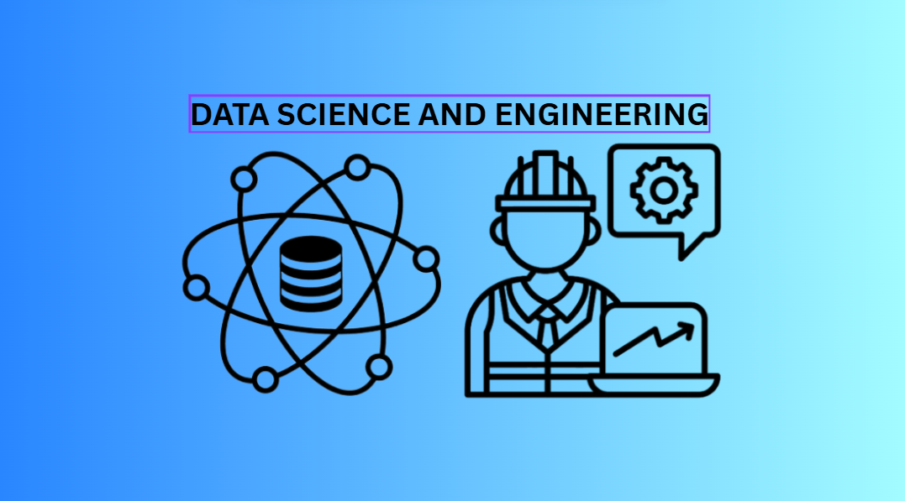
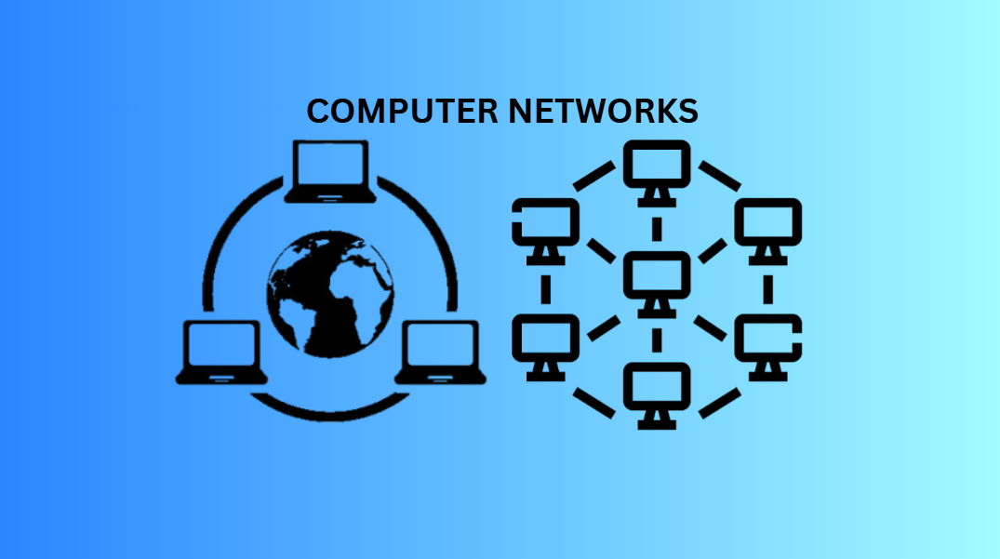

The different directions a Computer Engineering student can take once the fundamentals are in place.

Embedded systems involve designing specialized hardware and low-level software where microprocessors or microcontrollers execute dedicated tasks within larger mechanical or electrical setups. In this domain, engineers write efficient firmware to manage hardware interfaces, real-time control logic, and sensor inputs.
The Internet of Things (IoT) focuses on connecting physical objects and embedded devices to internet networks, allowing them to collect, exchange, and process data autonomously. Engineers in this field bridge hardware, edge computing, cloud services, and wireless protocols to build smart environments and automated monitoring systems.

Robotics and Automation focus on designing, programming, and maintaining autonomous mechanical systems and intelligent machines that execute tasks with precision and minimal human intervention. In computer engineering, this field merges electromechanical hardware with real-time feedback loops, sensor integration, actuator control, and embedded software to automate industrial manufacturing, logistics, and smart environments.

Computer Hardware & Architecture focuses on the fundamental design, structural layout, and physical components of computing machinery. In computer engineering, this domain encompasses hardware-software interface design, logic synthesis, memory hierarchy optimization, and processor microarchitecture to maximize system speed, energy efficiency, and reliability across digital computing platforms.

Software development focuses on designing, building, testing, and maintaining applications, operating systems, and computing platforms. In computer engineering, software developers bridge low-level system operations with high-level user interfaces, applying structured programming practices, Object-Oriented Programming (OOP), and algorithmic problem-solving to deliver efficient, reliable digital solutions.

Artificial Intelligence (AI) and Machine Learning (ML) focus on creating intelligent algorithms and hardware systems capable of learning, reasoning, and automated decision-making. In computer engineering, this field merges data science with specialized computing hardware to enable real-time pattern recognition, predictive analytics, computer vision, and autonomous control across embedded and edge environments.

Data Science and Data Engineering focus on managing large-scale data architectures and applying statistical modeling to transform raw information into actionable operational insights. Computer engineers in this domain design robust data pipelines, optimize database systems, and build scalable infrastructure that ingests, cleans, and processes massive data streams for advanced analytical and predictive applications.

Computer networks focus on designing, configuring, and managing communication systems that enable interconnected devices to securely share data and resources. Engineers in this field build scalable hardware and software frameworks, handling routing protocols, network topologies, virtual local area networks (VLANs), and bandwidth optimization across enterprise networks and cloud environments.
Cybersecurity focuses on protecting hardware, software networks, digital infrastructure, and sensitive data from unauthorized access, cyberattacks, and operational disruptions. Engineers in this field design defensive frameworks, audit systems for hardware and software vulnerabilities, implement encryption protocols, and build resilient response measures to secure critical digital assets.
Cloud & Edge Computing focuses on distributing computational resources and data processing across centralized cloud infrastructure and localized edge nodes. Computer engineers in this domain build scalable cloud architecture while deploying micro-datacenters, containers, and localized compute resources near data sources to minimize latency, optimize bandwidth, and enable real-time processing.
Every specialization above maps to real roles in the industry—see what graduates in each direction go on to do.